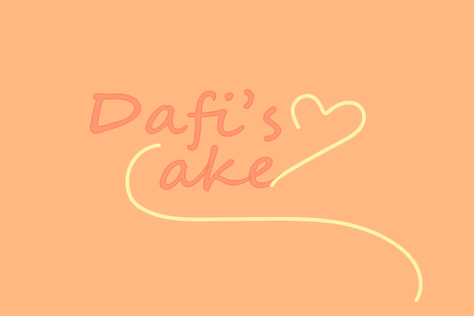
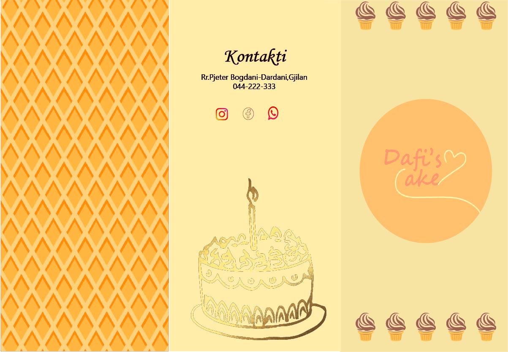
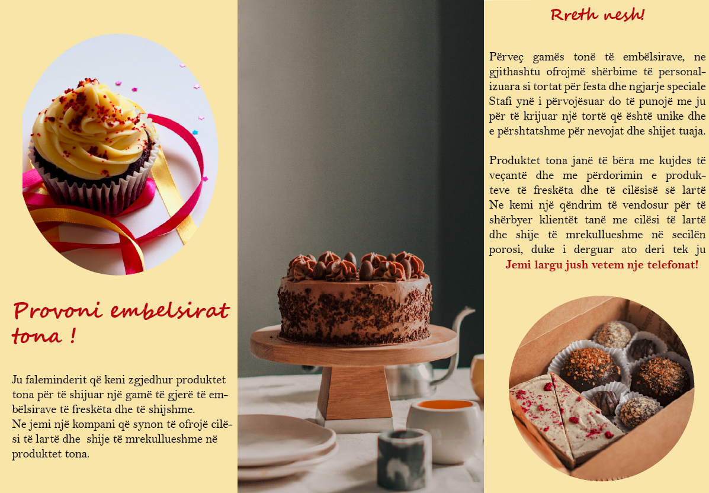

Project 1- Dafi's Cake Project
The project centered around boosting a private company's image and advertising. It involved creating a special logo, a fun promo video, good-looking cover pages, and an informative brochure. I used programs like Adobe Illustrator, Photoshop, InDesign, and Premiere Pro to make these things. This made the company's look much nicer and their promotional stuff more appealing.
The Logo, Cover Page, and Brochure should exude a consistent aesthetic, as the intention is for them to seamlessly complement each other.This entails ensuring that both elements share a warm and inviting color scheme and overall ambiance.
  The video is made up of two separate videos that work together in perfect harmony to create the effect of a single video, also there's an audio track that's perfectly timed to match the actions and events in the video. This synchronization between the two videos and the audio adds to the overall impact and makes the entire viewing experience feel seamless and unified.